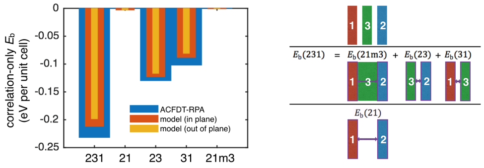
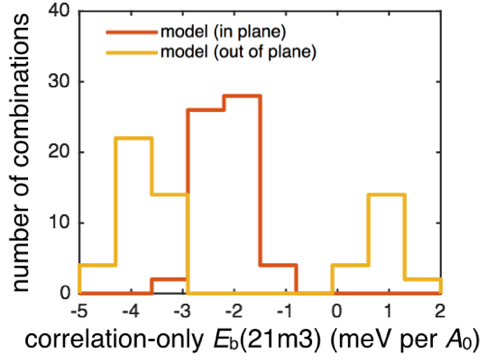

We discover, surprisingly, that a defined Lifshitz-based model can provide vdW potentials to within 8-20% of advanced electronic structure calculations (ACFDT-RPA) while being orders of magnitude faster. Using this fast Lifshitz model, we study the vdW binding properties of 210 three-layered heterostructures. We discover the potential for repulsive three-body vdW effects among three-layered heterostructures.
Computation of vdW-relevant nonlocal correlations within a density functional theory (DFT) framework is challenging. A simple inclusion of pairwise potentials is economical but can be qualitatively inaccurate for certain nanostructures. A seamless vdW formalism, the adiabatic-connection fluctuation-dissipation theorem within random phase approximation (ACFDT-RPA), has been empirically reported to be the most accurate but is inhibited by its demanding computational cost.
As an alternative to the ACFDT-RPA, we apply a defined Lifshitz model to the study of vdW interactions for layered materials, including five transition metal dichalcogenide (TMD) monolayers, monolayer BN and graphene. Originating in 1956, the Lifshitz model gives an analytical expression describing the Casimir/vdW interaction between two macroscopic objects mediated by the polarizability of a medium body, using an electromagnetic formulation. Usually, the vdW interaction is attractive, holding many bulk layered materials together. However, Lifshitz showed that it is possible to generate a repulsive vdW interaction depending on the relationship between the dielectrics of the three bodies. In this study, we posed the question: can we find a repulsive vdW interaction in layered materials?
To implement the Lifshitz models, we calculate DFT-based frequency-dependent dielectric functions of each layer. The Lifshitz model is intrinsically macroscopic and the extent to which it can be applied to the atomic scale is unknown. To apply the continuum-based model to the atomic scale, we discover that using a covalent atomic radius to define surface positions for TMD monolayers, surprisingly, leads to a reasonable agreement with ACFDT-RPA. We study three cases of three-layered heterostructures and find that the defined Lifshitz model provides the vdW potentials to within 8-20% of the ACFDT-RPA calculations.

Correlation-only binding energies in a layered heterostructure: monolayer MoSe2, MoS2, WS2. We discover that the energy magnitude of three-body effects (Eb(21m3) - Eb(21)) is much smaller than that of two-body effects (Eb(23), Eb(31)).
We apply the defined Lifshitz model to 210 three-layered heterostructures. We discover potential repulsive interactions in some three-layered heterostructures. Positive values of Eb(21m3) indicate repulsive interactions between layer 2 and layer 1.

Correlation-only binding energies in monolayer stacking with a dielectric medium layer (monolayer BN/graphene).
Publication:
Zhou, Y., Pellouchoud, L. A., Reed, E. J., The Potential for Fast van der Waals Computations for Layered Materials Using a Lifshitz Model. 2D Materials, doi:10.1088/2053-1583/aa528e (2017).